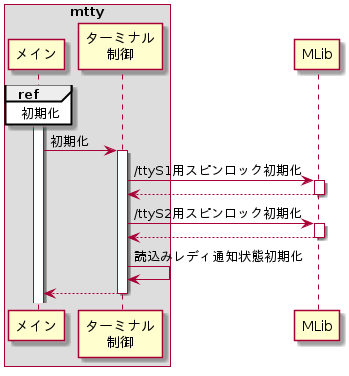
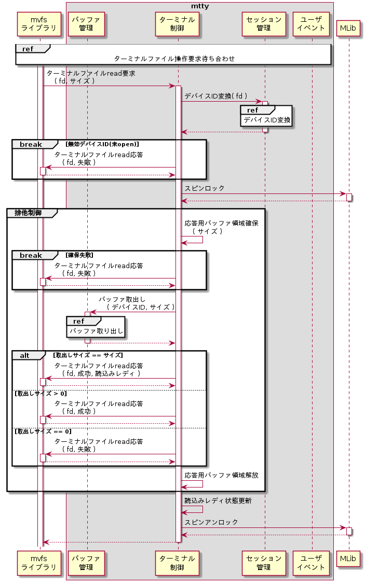
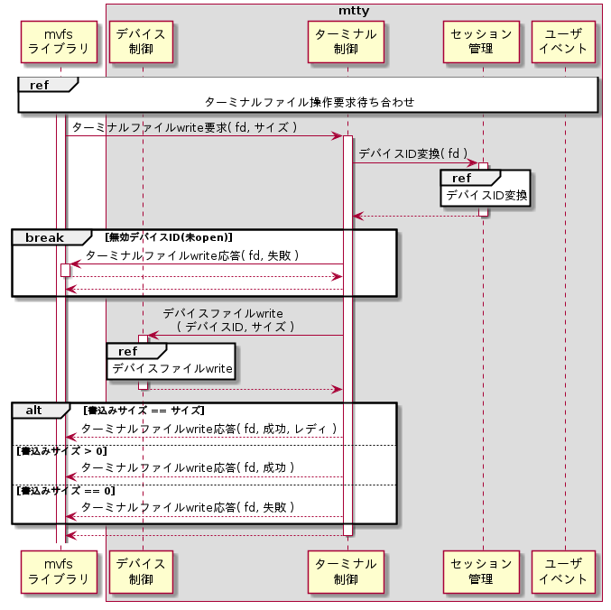
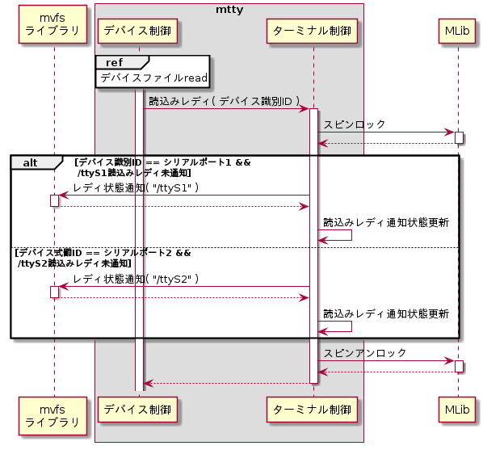

ターミナル制御モジュール
ターミナル制御モジュールは下記機能を持つ。
初期化
スピンロックを初期化する。シーケンスを以下に示す。

スピンロック初期化
ターミナル制御モジュールでは、ターミナルファイル毎に読込みレディ通知状態を管理する。読込みレディ通知状態はデバイスイベントスレッドとユーザイベントスレッド上で設定参照するため、スピンロックにより排他制御する。スピンロックの初期化はMLibライブラリのMLibSpinInit()を用いる。設定パラメータを以下に示す。
| # | 引数名 | 設定値 |
| 1 | *pHandle | (ターミナルファイル毎の スピンロックハンドルへのポインタ) |
| 2 | *pErr | NULL |
読込みレディ通知状態初期化
読込みレディ通知状態を未通知に初期化する。
ターミナルファイルread
ターミナルファイルreadのシーケンスを以下に示す。

デバイスID変換
セッション管理モジュールのデバイスID変換機能を用いて、グローバルFDからデバイスIDを取得する。
スピンロック
スピンロックはMLibライブラリのMLibSpinLock()を用いる。設定パラメータを以下に示す。
| # | 引数名 | 設定値 |
| 1 | *pHandle | (ターミナルファイル毎の スピンロックハンドルポインタ) |
| 2 | *pErr | NULL |
応答用バッファ領域確保
要求されたサイズ分のデータをバッファから取り出し格納しておく為のバッファ領域をC標準ライブラリのmalloc()を用いて確保する。設定パラメータを以下に示す。なお、バッファ領域の確保が失敗した場合は、デバイスファイルread応答で失敗を返す。
| # | 引数名 | 設定値 |
| 1 | size | (read要求サイズ) |
バッファ取出し
バッファ管理の機能を用いてバッファからデータを取り出す。
ターミナルファイルread応答
詳細は外部仕様(ターミナルファイルread要求処理機能)のターミナルファイルread応答を参照のこと。
応答用バッファ解放
確保した応答用バッファをC標準ライブラリのfree()を用いて解放する。設定パラメータを以下に示す。
| # | 引数名 | 設定値 |
| 1 | *ptr | (バッファ領域へのポインタ) |
読込みレディ通知状態更新
ターミナルファイルread応答で設定した読込みレディ状態を保存しておく。
スピンアンロック
スピンアンロックはMLibライブラリのMLibSpinUnlock()を用いる。設定パラメータを以下に示す。
| # | 引数名 | 設定値 |
| 1 | *pHandle | (ターミナルファイル毎の スピンロックハンドルポインタ) |
| 2 | *pErr | NULL |
ターミナルファイルwrite
ターミナルファイルwriteのシーケンスを以下に示す。

デバイスID変換
セッション管理モジュールのデバイスID変換機能を用いて、グローバルFDからデバイスIDを取得する。
デバイスファイルwrite
デバイス制御のデバイスファイルwrite機能を用いてデバイスにデータを書き込む。
ターミナルファイルwrite応答
詳細は、外部仕様(ターミナルファイルwrite要求処理機能)のターミナルファイルwrite応答を参照のこと。
読込みレディ通知
読込みレディを通知済みか否か判断し、未通知の場合は読込みレディを通知する。シーケンスを以下に示す。

スピンロック
スピンロックはMLibライブラリのMLibSpinLock()を用いる。設定パラメータを以下に示す。
| # | 引数名 | 設定値 |
| 1 | *pHandle | (ターミナルファイル毎の スピンロックハンドルポインタ) |
| 2 | *pErr | NULL |
レディ状態通知
読込みレディ未通知の場合は、読込みレディ状態をmvfsに通知する。詳細は、外部仕様(デバイスファイルread機能)のレディ状態通知を参照のこと。
読込みレディ通知状態更新
レディ状態通知にて読込みレディ状態を通知した場合は、読込みレディ状態を通知済みにしておく。
スピンアンロック
スピンアンロックはMLibライブラリのMLibSpinUnlock()を用いる。設定パラメータを以下に示す。
| # | 引数名 | 設定値 |
| 1 | *pHandle | (ターミナルファイル毎の スピンロックハンドルポインタ) |
| 2 | *pErr | NULL |